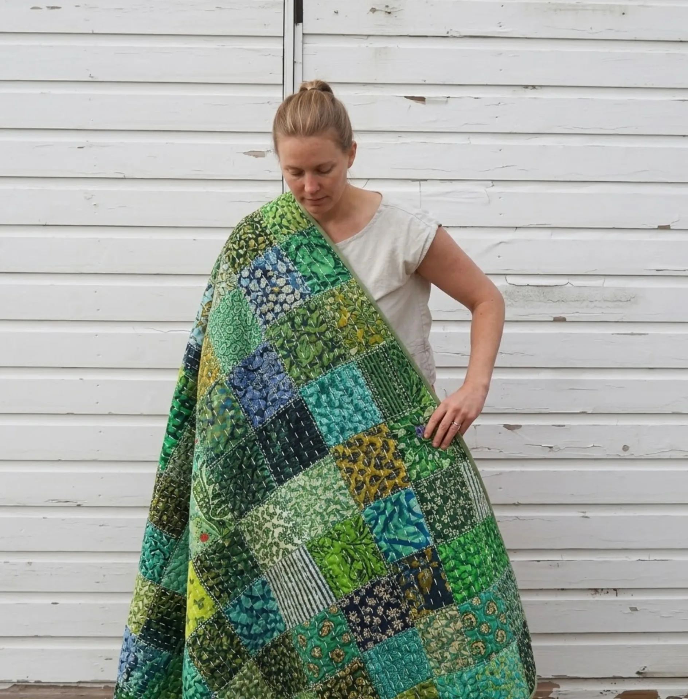
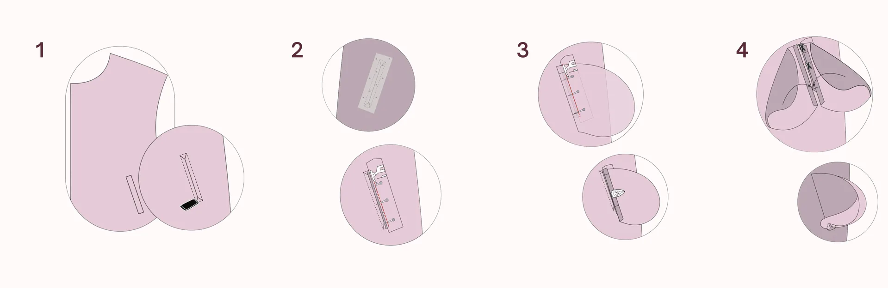
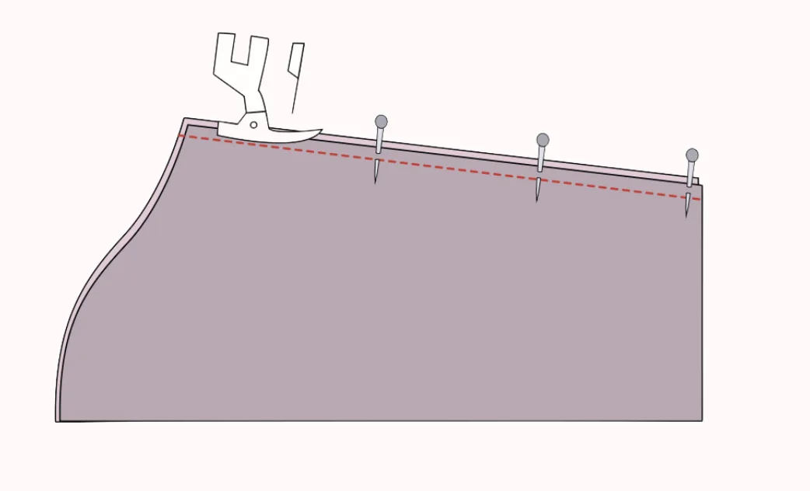
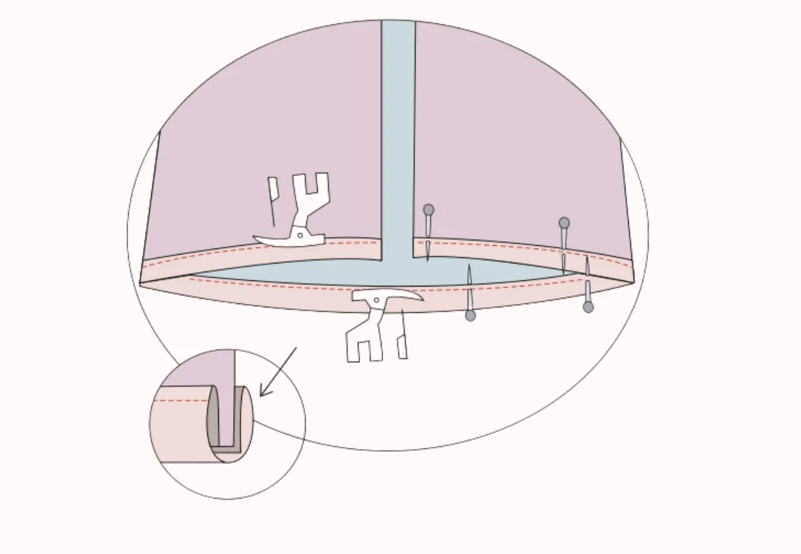
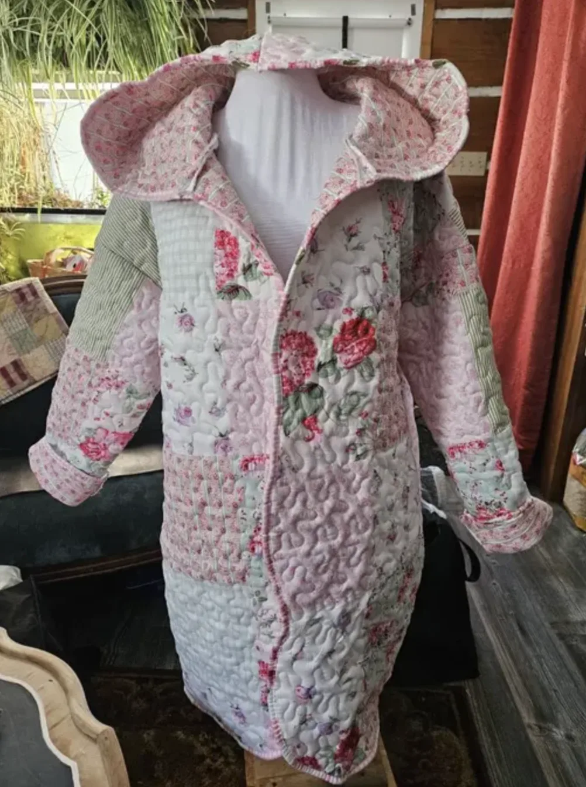
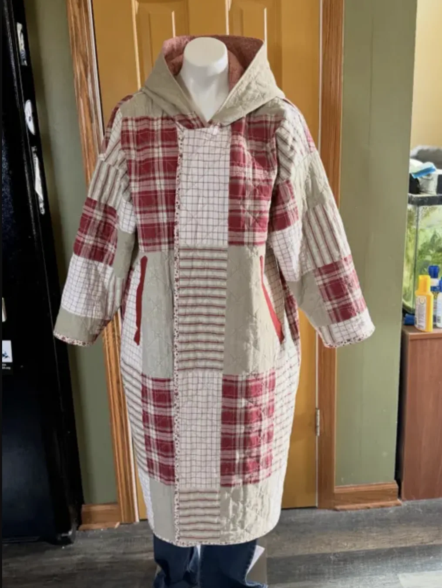

There is a particular kind of satisfaction that comes from turning a vintage quilt into a coat. The Siena Quilt Coat by LU2COHOUSE is designed precisely for that: a long, gently structured silhouette with a relaxed hood, a fully lined interior, and clean bias-bound edges — built to let the quilt's original character become the design. It is equally beautiful in new quilted cotton or pre-quilted fabric, but the pattern was made with upcyclers in mind. This guide covers 8 key construction milestones of this womens quilted jacket sewing pattern — the full pattern adds every graded piece, the inclusive size chart, and a 20-page illustrated instruction booklet covering all 14 steps of the construction process in precise, beginner-friendly detail.
1 Choosing Fabric: How to Upcycle a Vintage Quilt into a Coat
While you can purchase pre-quilted cotton or denim off the bolt, we highly recommend utilizing this project to upcycle a thrifted quilt or a vintage blanket.
Using an existing bound twin-size quilt (minimum 65" x 85") gives your jacket instant, one-of-a-kind character. If you love the look of intricate patchwork, sourcing a pre-loved textile is an eco-friendly and deeply creative starting point.

A vintage patchwork quilt — the perfect fabric to upcycle into a one-of-a-kind Siena coat
2 How to Print a Vintage Quilt Coat PDF Pattern
Before diving into the fabric, you need your clothing patterns prepped. For this tutorial, we are using the LU2COHOUSE Siena Quilt Coat Sewing Pattern — the exact pattern used to create the jacket you see in this guide. To begin, ensure your PDF pattern is printed at full size — meaning your printer settings must be set to "Actual size" with no scaling. Always print the first page only and verify the scale is correct by measuring the 2-inch test square with a ruler.
Additionally, use layered PDF technology to your advantage. Open the file in Adobe Acrobat Reader, click on the "Layers" icon, and click the eye icon to deselect the sizes you do not need. This saves ink and makes your pattern lines incredibly easy to read.

Set your printer to "Actual size" — then verify with the test square before printing all pages
3 How to Choose the Right Size for Your Quilt Coat Sewing Pattern
Every body is different, so choosing the correct size is crucial for a great fit. Using a measuring tape, gently measure your bust, waist, and hips. Keep the tape comfortably fitted — not too tight or too loose — to ensure accuracy.
Compare your measurements with the pattern's size chart. The Siena Quilt Coat sewing pattern covers sizes XXS through 5XL, making it one of the most inclusive women's clothing patterns available. If your measurements fall between two sizes, we recommend choosing the larger one for a more relaxed and comfortable fit, which is ideal for a layering piece like a quilted jacket.
Sewing this exact look along with us?
While this tutorial covers the major milestones, a perfect jacket construction is all in the details.
To get the exact proportions, the inclusive size chart, and the full Siena instruction booklet — a 20-page PDF that walks you through all 14 construction steps in thorough, illustrated detail — you will need the LU2COHOUSE Siena Quilt Coat Sewing Pattern. Available as an INSTANT DOWNLOAD, it includes formats for A4 and US Letter so you can print right at home, along with A0 for large-scale print shops, ensuring you can start cutting right away. The pattern also includes separate layers for every size and size measurements in both cm & inches.
Tools you will need
How to read the illustrations
4 How to Sew a Welt Pocket on a Quilted Jacket
One of the most intimidating parts of jacket sewing is the pockets, but this is where a well-designed sewing pattern makes all the difference. Our pocket method guarantees a clean, professional finish without the bulk of a patch pocket.
- Apply a small piece of interfacing to the wrong side of the jacket front at the pocket placement mark for stability.
- Stitch your folded pocket piece right sides together with the jacket front, aligning it precisely with your marked rectangle.
- Cut straight down the center of the stitched rectangle, stopping exactly 1 cm before each end, then snip diagonally into each corner to form small triangles — take care not to cut through the stitching.
- Pull both pocket pieces through the opening to the wrong side of the jacket and press around the opening to create a perfectly crisp, rectangular welt.

5 How to Sew Set-In Sleeves on a Quilt Coat
With the pockets secure, we move on to the main structure. Place the front and back pieces right sides together, pinning along the shoulder and side seams.
- Gently pull the gathering threads on the sleeve cap to ease it into the armhole, adjusting the distribution until it matches the armhole curve evenly.
- Pin the sleeve cap firmly in place from both sides, then sew around the armhole to attach the sleeve. Press the seam and repeat for the lining sleeve.

6 How to Sew the Hood on a Quilt Coat
The hood is one of the most satisfying parts of the Siena coat — it gives the garment its signature silhouette. You will sew the outer hood and the lining hood separately before joining them together.
- Pin the outer hood pieces right sides together along the curved center seam, aligning all edges carefully. Stitch using a 1 cm seam allowance. Repeat the same process for the lining hood pieces.
- Place the outer hood and lining hood right sides together, align the front face edges, and pin along the face opening.
- Stitch along the face opening edge, trim the seam allowance, and turn the hood right side out.
- Press the edge flat for a crisp, clean finish, then set the hood aside ready to attach to the jacket body.

7 How to Fully Line a Quilt Coat with the Sandwich Method
A fully lined interior is what separates a truly polished fashion pattern from a basic sewing project. It elevates your quilted sewing to a professional level and is a hallmark of quality women's jacket sewing. To achieve this without raw seams showing, we use a specific bagging-out technique.
- Lay your assembled jacket flat with the hood positioned downward and the sleeves folded inward.
- Place the fully assembled lining directly on top, right sides together, tucking the lining sleeves inside to create a clean sandwich arrangement.
- Stitch around the perimeter, then pull the entire jacket right-side out through the bottom hem opening.
- Press all edges firmly with an iron for a crisp, seamless finish.

8 How to Finish Hems with Bias Binding on a Quilt Coat
For the absolute highest quality finish on your quilted sewing project, we apply bias binding to the wrist hems and the bottom hem. This detail is what makes the Siena stand apart from other women's clothing patterns — it is the finishing touch that gives the garment a truly couture feel.
- Unfold one edge of your bias tape and align its raw edge with the raw edge of the jacket hem, right sides together. Pin neatly in place.
- Stitch along the crease of the opened bias tape to secure it to the hem.
- Fold the tape over to the inside so it completely encases the raw seam, pin smoothly, then topstitch close to the folded edge. Press for a crisp, polished finish.

Ready to Sew Your Own Quilted Jacket?
There is nothing quite like wearing a coat you made yourself — especially when it started as a vintage quilt with a story.
Every milestone in this guide is just a preview of what the full pattern unlocks. The Siena instruction booklet alone is 20 pages — covering all 14 construction steps in step-by-step illustrated detail, so nothing is left to guesswork. Download it instantly and start cutting today.
What you will receive with the Siena Pattern:
- PDF sewing pattern — sizes XXS through 5XL
- US Letter printable pattern for home printers
- A4 printable pattern
- A0 printable pattern for large-scale print shops
- Separate layers for every size — easy to print only your size
- Size measurements in both cm & inches
- The complete 20-page instruction booklet — all 14 steps, illustrated in detail
- Instant digital access — no waiting!
[ Made by our community ]
What Sewers Made with the Siena Pattern




[ Related Guides ]
Want to explore more womens jacket patterns? We have a massive collection of beginner-friendly clothing patterns tailored for every style!

Terms of Use: Please note that all digital patterns, tutorials, and designs are for personal use only. The unauthorized commercial reproduction or distribution of any pattern from my store or the resulting garments is strictly prohibited to protect original designs.